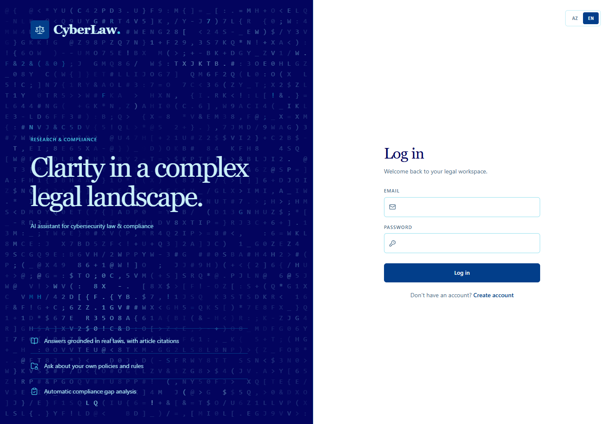
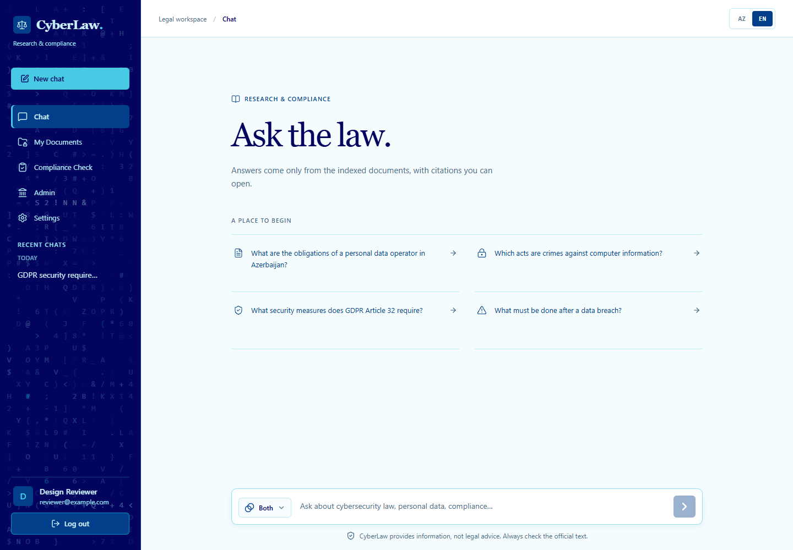

CyberLaw / Blue design / Animation preview
Letter Glitch, in blue.
Your selected React Bits effect, now with larger, brighter cyan letters and a denser, more active pattern over navy. It appears on the sign-in panel and sidebar. The writing and reading surfaces stay clear.
Watch the effect
A recording of the actual sign-in panel with pointer interaction. The video pauses automatically when reduced motion is requested.
Sign in


The Animations preference controls the effect. Switching it off returns to the solid navy background.
In the workspace

View the mobile navigation preview. Screenshots use isolated sample data.